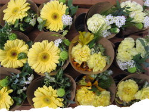

 image: petitshoo“バッグの中だけがつめたいまま”
Thank God It’s Friday!
ビルの谷間の花屋に、野山の季節があった。
仮設[1]されたような小さい店の、その名をおぼえず「冷蔵庫のない花屋さん」と呼んだ。
豪奢な蘭や薔薇のような花を見なかった。あったのかもしれないが、それより季節によって異なる野山の花々に心惹かれていた。なかから、いつも1種類を選び、買えるだけ束ねてもらう。
金魚草、松明（たいまつ）草、きりん草、吾亦紅（われもこう）……。名前をひとつずつ、おぼえていく。
始業前に仕事を始め、終業時刻には終える、規則正しい事務の仕事。
平日と休日の境目に、その花屋があった。
自分のために花を選ぶと、週末のひととなることができる。
出窓も床の間[2]もない小さな住まいでは、花を飾る場所が限られる。
限っているのは空間よりも、心の余裕の無さかもしれない。
明日はお休み。それだけの理由で、花の居場所はひろがっていく。
高層オフィスで完全に冷やされたからだも、地上ではすでに花たちと同じ外気に馴染んでいる。
バッグの中だけがつめたいままなのを、財布を取り出す指先が知っておどろく。
野山の花々は街なかで、地味ゆえにめずらしく、すれ違うひとが「あら」という顔をする。
わたしはなんだか悪戯しているような、誇らしいような気持ちになってくる。
これからひととき花を抱え、視線がやさしくとまる瞬間に、柔らかくゆるむ表情に、いくつ出合うだろう。
押されたり突かれたり、ラッシュの暴力は今日はもう近寄らないだろう。
そんなことを思いながら、地下鉄の駅に向かう。
花の金曜日[3]という言葉があった。英語ではT.G.I Friday!
明日はお休み。週末の、ささやかな贅沢。
referenced works
- 仮設： 期間を限定して臨時に設置すること。temporarinessは、極めて日本的な要素のひとつではなかろうか。野山に毛氈を敷き、茶道具を配すれば、茶室となる。奉納のための能を舞うための舞台も、境内に仮設する能舞台。畳も障子も襖も、取替えのしやすい仮設的な存在である。物は仮設でよい。そこで営まれる精神性が永続的なものであるならば。 ↩
- 床の間：座敷内に一段高く構えられた、掛け軸、花飾り、香合などを飾る場所。和室における正式な装飾空間。床の間を背にする位置が、最も上座となるが、部屋の構造によっては下座床となる場合もある。このあたりを知らないと、日本人として恥をかく。もっとも、知らない者同士ならば、混沌とした平和が得られるのだろうが。 ↩
- 花の金曜日：通称、花金。バブル期の終焉とともに、死語となった。週休二日制導入によって、連休直前の夜をさす言葉として誕生した。解放感とともに浮かれ騒ぐために夜を費やすことが当然のように受け止められていた時代。現在の金曜日の夜には、いかなる花が咲くのだろうか。 ↩
location information
- 場所: 中央区銀座花椿通りの端
- 時間: 午前中
- 緯度: 35.669012
- 経度: 139.761822
- 地図: Google Maps
016 “ポツンと東京を見下ろすその姿は気高く、とても真摯だ。”
015 “光に彩られて先輩の横顔が、綺麗に染まる.。”
014 “悲しくて歩けないという気持ちを初めて知った夜”
013 “私たちの声だけが静かに揺れた”
012 “細くぐるりと指を囲む、日焼けをしていない左手の薬指の根元”
011 “涙を流しながら煙を吐く彼の隣”
010 “幼い耳には雑音にしか聴こえない音楽に興味が湧いた”
009 “今年も蕎麦が食べられるなぁ”
008 “お堀に映った月をみんなで見てる”
007 “バッグの中だけがつめたいまま”
006 “ほぼ満員の客がざわざわと寿司を食らっている”
005 “向かい合って、仁王立ち”
004 “なんでもないたった6畳の白い部屋”
003 “昔の彼女がスーツを着てモデルをしてた”
002 “電車が悪いんです”
001 “どこで彼女とセックスをするのかは、東京の子供にとっては問題です”

Write for Us!
広い東京の中に、あなたの思い出を刻んでみませんか？ あの日、あの場所で体験した、あの出来事。あなたにとって忘れられない思い出を、短い物語にして送ってください。
commentary